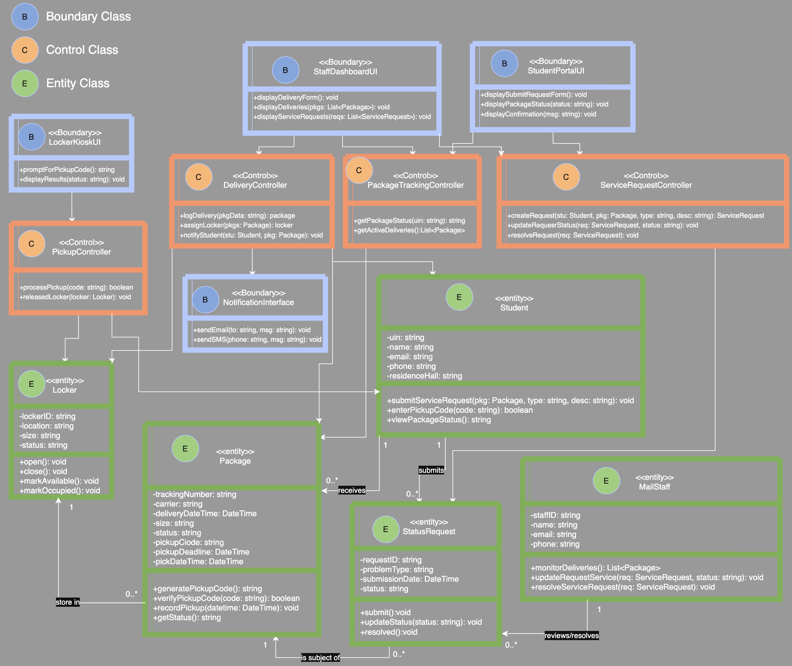
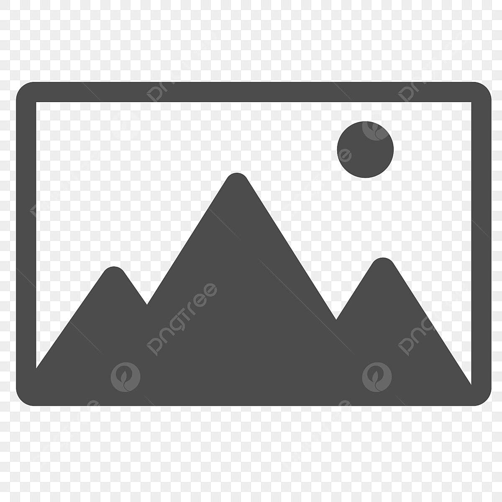

Paw & Play Co. Business Systems
A custom dashboard, client portal, and sitter portal that run my pet care business.
The problem
As Paw & Play Co. grew, client information (pets, services, status, contracts, and business notes) was scattered and hard to manage. Off-the-shelf software was expensive and included more than I needed.
What I did
I designed and built a private business dashboard using Claude Code, directing the features, data structure, and testing myself. I designed two database tables, one for client records (contact info, pet, breed, service, status, and contract) and one for tagged business notes. The first version stored data in the browser, which risked data loss and didn't sync between devices, so I migrated it to a Supabase database. I kept the dashboard's tables separate from my website's tables so the two systems couldn't interfere with each other. The overview page calculates live stats (total, active, and pending clients, plus note count) directly from the database.
What happened
I now manage all client records and business notes in one place that I can access from any device, with data stored securely in a database instead of the browser. The dashboard became part of a larger system that includes my website, client portal, and sitter portal, and it's the foundation for a planned mobile app that will extend tracking beyond the browser.
Live demo available on request.
ODU Smart Package System: System Analysis and Design
A complete analysis and design package for a smart locker system that manages student package delivery at Old Dominion University
The problem
ODU needed a better way to manage packages for on-campus students. Instead of delivering to residence halls, carriers would place packages in secure smart lockers across campus. The systme had to track students, packages, lockers, pickup codes, and delivery issues, while keeping packages secure and lockers available
What I did
Over a semester-long series of assignments, I took the system from initial requirements to detailed design:
- Stakeholder analysis: used Onion Model to identify stakeholders, from students, drivers, and mail staff to Housing, IT, carriers, Public Safety, and complianc.
- Design thinking: emphazied with students who miss pickup deadlines and proposed a new Proxy Pickup feature, which lets a student authorize a trusted person to retrieve a specific package with their own code.
- Use case modeling: built a use case diagram, including a Time actor for expiring overdue packages, and wrote a detailed narrative for the Retrieve Package use case.
- Activity diagram: modeled the pickup workflow, including the decision points.
- Non-functional requirements: defined specific, mneasurable requirements for the system, such as response time, security, and availability.
- Class diagram: designed the system's classes, attributes, operations, and relationships, with multiplicities.
- Sequence diagram: showed how the student, kiosk, system, and locker interact during package pickup
- Unit test: wrote a unit test for a deposit function, covering both valid deposits and the negative-amount error case
What happened
I produced a complete, connected design for the system, where each diagram builds on the previos one, from who the users are to how the code is tested.


Paw & Play Mobile App Proposal
Fully functional business application that streamlines business and client operations.
The problem
As Paw & Play Co. grew, client information (pets, services, status, contracts, and business notes) was scattered and hard to manage. Off-the-shelf software was expensive and included more than I needed, so I wanted one organized, affordable place to track clients and operations.
What I did
I designed and built a private business dashboard using Claude Code, directing the features, data structure, and testing myself. I designed two database tables, one for client records (contact info, pet, breed, service, status, and contract) and one for tagged business notes. The first version stored data in the browser, which risked data loss and didn't sync between devices, so I migrated it to a Supabase database. I kept the dashboard's tables separate from my website's tables so the two systems couldn't interfere with each other. The overview page calculates live stats (total, active, and pending clients, plus note count) directly from the database.
What happened
I now manage all client records and business notes in one place that I can access from any device, with data stored securely in a database instead of the browser. The dashboard became part of a larger system that includes my website, client portal, and sitter portal, and it's the foundation for a planned mobile app that will extend tracking beyond the browser.
Network Traffic Analysis with Wireshark
[One-line summary of the lab.]
The problem
[What you set out to examine or test.]
What I did
[Your setup, what you captured, and how you analyzed it.]
What happened
[What you found and what you learned.]
Economic Growth Brief: China, the United States, and Mexico
A one-page brief for ECON 305 (Intermediate Macroeconomic Theory) explaining why China's income grew so fast from 2000 to 2024, using the Solow growth model and World Bank data.
The problem
Why has China's income per person grown so much faster than that of the United States or Mexico, and can that growth continue?
What I did
Collected World Bank data on saving, population growth, and GDP per capita, built the charts and tables in Excel, and applied the Solow growth model to explain the gap.
What happened
Experience and education
Owner, Paw & Play Co.
Virginia Beach, VA
- Founded and run a pet care and dog training business with six service lines, handling operations, finance, marketing, and client relations.
- Designed and launched a full-stack web platform with a client portal, sitter portal, live availability calendar, and photo uploads.
- Managed the DNS migration from Porkbun to Netlify, set up business email on Zoho Mail, and planned a Zoho Calendar–Supabase integration to sync scheduling data.
- Developed the brand identity and all marketing materials, including the website, brochure, flyers, business cards, and social media assets.
Shift Lead, Walgreens
Virginia Beach, VA
- Supervised store operations and led teams of 7 associates per shift, assigning tasks to meet service, sales, and productivity goals.
- Used the point-of-sale system and handheld inventory devices to process transactions, run price changes, and track stock levels.
- Monitored inventory, placed replenishment orders, and carried out planogram updates to keep products available and reduce out-of-stocks.
- Enforced loss prevention and compliance procedures, including regulated product sales and safety standards, to reduce shrink and risk.
- Trained and onboarded new associates on store systems, procedures, and customer service standards.
Store Manager, Journeys
Virginia Beach, VA
- Managed daily financial irregularities and inventory losses, reducing discrepancies by 15%.
- Managed payroll budgets and built staff schedules that matched labor hours to traffic patterns and sales forecasts.
- Supervised employee performance, addressed challenges, and improved workflow to achieve organizational objectives, increasing overall team performance by 20%.
- Enhanced retail space aesthetics through refined merchandising strategies leading to a 13% increase in plus-one purchases.
- Mentored sales personnel on product details, incentive programs, and sales methodologies, leading to a 37% increase in customer conversion and a 10% growth in sales revenue.
BSBA, Information Systems
Old Dominion University
Contact
I'm looking for opportunities starting in 2027. I'd love to hear from you.
- Email: raynaleechiavario@gmail.com
- LinkedIn: https://www.linkedin.com/in/rayna-chiavario-connect/
- Business: pawplayco.net